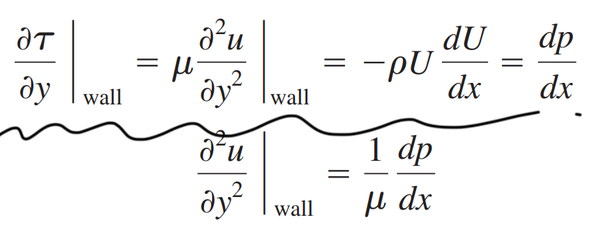

[Fluid mechanics] Ch 7. Flow past immersed bodies - flow separation
유동박리란? 유체가 어떤 wall위를 흐르고 있다고 가정하자.
그때, wall과의 마찰로 당연히 속도가 감소하며 boundary layer을 형성 할 것이다.
그런데, 여기서 계속되는 Momentum loss로 adverse pressure gradient(dp/dx > 0)이 발생하고,
결국 유체는 벽면에서 떨어진 다는 것이다.
원문에서는 ->
Prandtl showed that flow separation is caused by
'excessive momentum loss near the wall'
아직 감이 안온다면,
이제, 수식과 figure을 가지고 정확히 해석해보자.
Momentum equation에서, wall에서는 u=v=0임은 자명하다 -> (가운데 두식)
뿐만아니라, Free stream 에서 속도와 압력의 관계(첫번째 식 오른쪽 두항)를
종합적으로, second derivative of u = dp/dx

그렇다면, adverse pressure gradient 가 생긴다면??? u의 y에 따른 포물선은 어떻게 될까??
먼저, Favorable gradient( dp/dx < 0 )인 경우는, 우리가 아는 velocity profile의 모습일 것이다.
![[Fluid mechanics] Ch 7. Flow past immersed bodies - flow separation](./images/img-002.png)
하지만, 계속되는 momentum loss로 velocity profile이 다음과 같이 s자로 휘게 되고,
d^2 u/ d x^2 > 0인 그래프가 그려지게 된다 -> dp/dx >0
![[Fluid mechanics] Ch 7. Flow past immersed bodies - flow separation](./images/img-003.png)
(d)의 경우, 벽에서 dy/du = 0 이 되고, 결국 shear stress 가 zero인 순간이 된다.
즉, 벽이 더이상 유체를 잡아주지 않는 다는 말이므로, (e) Back flow가 발생하게 된다.
Flow separation 은 결국, Adverse pressure gradient 로 발생한다.
Flat plate은 경우, Momentum loss -> Adverse pressure gradient였다.
another example로
Diffuser 같은 경우, dV / dx < 0, dp/dx > 0 이므로, Flow separation 이 다음과 같이 존재한다.
![[Fluid mechanics] Ch 7. Flow past immersed bodies - flow separation](./images/img-004.png)
그리고, Flow separation 은
(a) : Laminar
(b) : Turbulent
에 따라서, 다르게 되고 이 Flow separtion으로 인해 물체의 앞뒤 압력차이가 다르게 됩니다.
따라서, Drag coefficient는 (a) > (b)
![[Fluid mechanics] Ch 7. Flow past immersed bodies - flow separation](./images/img-005.png)
Flow separation 을 이용해서, 항력을 줄인 가장 큰 예시는 바로, Golf ball
![[Fluid mechanics] Ch 7. Flow past immersed bodies - flow separation](./images/img-006.png)
작은 Dimpole이라는 구멍이, flow separation을 늦춰주어, 항력이 감소한다.